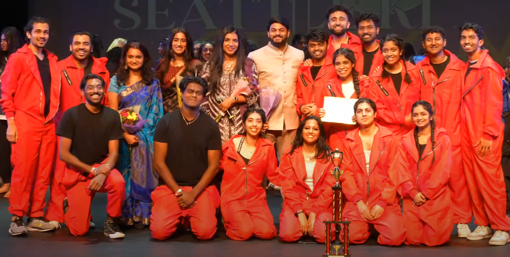

Six years. That's how long it had been since I last danced on stage. I used to be the dancer, the singer, the "give me a mic and a spotlight and I'll thrive" kind of girl. But somewhere between adulting and grad school, that version of me hit snooze. Practicality took over. And the performer in me quietly curled up in the corner.
But on a random November night in 2024, something unexpected happened. I saw ASU Aalishaan light up the stage at a university event called Jankaar and something in me, something very dormant but very dramatic, stirred. It wasn't just nostalgia; it was a pull. So, I made a last-minute decision to go to their dance workshop. I had no clue it would turn into an audition.
I walked in thinking it was a casual session.
Spoiler #1: It wasn't.
Spoiler #2: I made the team!
And just like that, I stepped into a whole new world.
We performed a set themed around Money Heist, with Kuthu, Bollywood, Hip-Hop, and Bhangra segments stitched into a high-energy narrative. Our first competition was Tashan in San Diego in January 2025 and it was humbling. We saw how much more we could push ourselves. Tighter formations, better synchronization, more intensity. And we did push. Hard.
When we found out we were selected for the National Desi Dance League (NDDL) Finals in Las Vegas in April 2025, I couldn't believe it. I swear the collective scream in our group chat could've shattered glass. I used to imagine doing dance routines in the mirror, turning my bathroom into a music video set. Suddenly, I was here... actually, doing it.
The grind was real. We practiced Mondays, Wednesdays, and Thursdays, 7:30 to 10:30 PM - no excuses. My biggest challenge? Stamina and breath control. I thought I was relatively fit. I was wrong. Learning to breathe while throwing my body into high-octane choreography was its own journey. I remember being winded after a single 90-second run-through, wondering how these people pulled off an entire set while looking fierce and effortless.

It made me appreciate the team so much more. These weren't just dancers - they were storytellers, athletes, artists, and dreamers. Some of them had been dreaming of going competitive since they were in high school. And now they were here - making it real. Being around that kind of drive was contagious.
Las Vegas was electric. We performed at The Paris Hotel, placed 7th nationally, and walked away with so much pride.

And then came Seattle Ki Shaam on May 26, 2025, where we came in 2nd place. That set included a new segment called Kundhe, and an extended intro video that gave our storyline more depth. We had curveballs with stage dimensions, lighting, reworked formations but it pulled us even closer together. We weren't just a team by then. We were a unit.
We ended that performance not with a bow, but with our team chant - loud, sweaty, proud. I'll never forget that feeling.
Joining Aalishaan wasn't just about dance. It brought me back to a version of myself I'd quietly missed. It cracked open a part of me I'd shelved. It reminded me that it's never too late to re-enter the story.
It opened up a whole new world and I didn't even know I'd been waiting to find it.